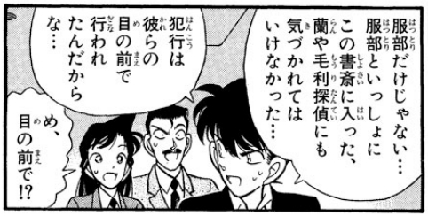
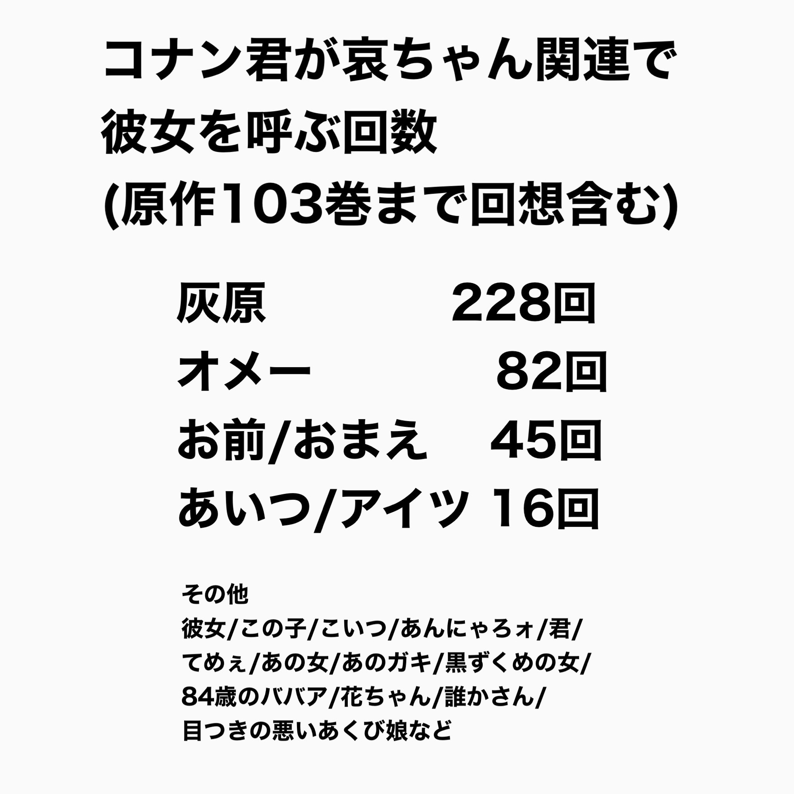
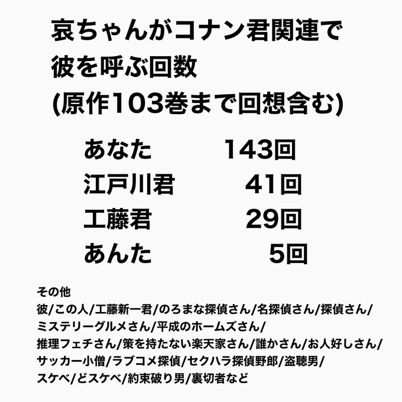

在日本文化中，人与人之间如何称呼是相当严格的。在职场、学校、私人生活中，不同关系的人之间如何称呼自有一套标准，胡乱称呼会被认为是不礼貌的表现。
在日语表达和日本文化中，人际关系是有一个同心圆的概念的，即“我”，“你”，“你我以外的第三方”。而“我”的概念往往并不只包含个人，而是包含“己方”的一个集合概念。也就是说，能达到同心圆中心层的，必然是与“我”关系最亲密的。而从“我”的角度出发，对同心圆中处于不同层的人使用的称呼也往往是不同的。
与此同时，每个角色对自己和别人的称呼也往往可以显示其个性，一些不合常理的称呼尤其如此。而称呼的差异也可以作为梗的一部分，最典型的就是基德VS世良那一案，世良是假小子，而兰园称呼她为“世良さん”，因此基德以为世良是兰园的学长，因为同级的男生应该被称呼为“世良君”。然而世良其实是同级的女生，所以被称为“世良さん”是毫无问题的。
由于文化差异，称呼词在日译中的过程中可能无法得到完全的表达，因此被翻译后的文字可能会丢失一些信息，因此本文想考证一下柯南主要角色间相互的称呼，以此找到人物间较为微妙的关系。
在日语表达和日本文化中，人际关系是有一个同心圆的概念的，即“我”，“你”，“你我以外的第三方”。而“我”的概念往往并不只包含个人，而是包含“己方”的一个集合概念。也就是说，能达到同心圆中心层的，必然是与“我”关系最亲密的。而从“我”的角度出发，对同心圆中处于不同层的人使用的称呼也往往是不同的。
与此同时，每个角色对自己和别人的称呼也往往可以显示其个性，一些不合常理的称呼尤其如此。而称呼的差异也可以作为梗的一部分，最典型的就是基德VS世良那一案，世良是假小子，而兰园称呼她为“世良さん”，因此基德以为世良是兰园的学长，因为同级的男生应该被称呼为“世良君”。然而世良其实是同级的女生，所以被称为“世良さん”是毫无问题的。
由于文化差异，称呼词在日译中的过程中可能无法得到完全的表达，因此被翻译后的文字可能会丢失一些信息，因此本文想考证一下柯南主要角色间相互的称呼，以此找到人物间较为微妙的关系。
1.柯南/新一
1）称呼兰与园子无后缀，直接称其名。这应该是发小的特权，也就是同心圆中的最中心层。在小学时曾经想对兰改称“毛利”，也就是同级生中男生对女生的一般称呼（较为不礼貌，理论上应该带后缀“さん”但其实一般不太用，都直接称呼姓，中规中矩地+さん感觉会比较疏远），但被兰抗议后，再次改回“兰”并沿用至今。
值得一提的是，他对园子的称呼也一直是“园子”，并没有改称“铃木”。
2）对灰原、世良及同辈男性直呼其姓。其实在灰原初登场一话，在灰原开枪后，可能是被吓到了，柯南非常规矩地称呼她为“灰原さん”，得知其真实身份后一直单纯以姓相称。这个称呼是比较微妙的，它既不像“灰原さん”那么疏远和礼貌，也不像“哀ちゃん”那么亲昵（其实这么称呼一个认识不到一年的女性几乎不可能），非常势均力敌，符合“战友”这个目前的关系特质。
3）对小五郎私下或内心称呼为“おっちゃん”不是很礼貌，但是在兰面前称其为“蘭の父さん（兰的爸爸）”。原漫画里没有新一直接称呼小五郎的场景，但可能不是“おっちゃん”，而是更礼貌的称呼，或者也直接叫“蘭の父さん”，因为M23里因为基德直接在兰的面前称呼小五郎为“おっちゃん”导致露馅。
4）对和叶称“和葉ちゃん”。这个很有趣，73曾经提到冲田是有一点“轻浮的的性格”，因为他叫和叶“和葉ちゃん”，但新一也是这么称呼她的，为什么就不轻浮呢？这就涉及到同心圆理论了，以服部为中心的话，他和和叶在同心圆的最中心层（他们也是相互直呼名字无任何后缀的），新一在稍远的第二层，而冲田则是在更外层。因此，新一可以以服部亲友的身份称呼同辈的和叶为“和葉ちゃん”，而冲田应该更为规矩地称她为“遠山（さん）”。因此新一称呼“和葉ちゃん”并不代表他与和叶多亲近，反而是代表他和服部关系紧密。
1）称呼兰与园子无后缀，直接称其名。这应该是发小的特权，也就是同心圆中的最中心层。在小学时曾经想对兰改称“毛利”，也就是同级生中男生对女生的一般称呼（较为不礼貌，理论上应该带后缀“さん”但其实一般不太用，都直接称呼姓，中规中矩地+さん感觉会比较疏远），但被兰抗议后，再次改回“兰”并沿用至今。
值得一提的是，他对园子的称呼也一直是“园子”，并没有改称“铃木”。
2）对灰原、世良及同辈男性直呼其姓。其实在灰原初登场一话，在灰原开枪后，可能是被吓到了，柯南非常规矩地称呼她为“灰原さん”，得知其真实身份后一直单纯以姓相称。这个称呼是比较微妙的，它既不像“灰原さん”那么疏远和礼貌，也不像“哀ちゃん”那么亲昵（其实这么称呼一个认识不到一年的女性几乎不可能），非常势均力敌，符合“战友”这个目前的关系特质。
3）对小五郎私下或内心称呼为“おっちゃん”不是很礼貌，但是在兰面前称其为“蘭の父さん（兰的爸爸）”。原漫画里没有新一直接称呼小五郎的场景，但可能不是“おっちゃん”，而是更礼貌的称呼，或者也直接叫“蘭の父さん”，因为M23里因为基德直接在兰的面前称呼小五郎为“おっちゃん”导致露馅。
4）对和叶称“和葉ちゃん”。这个很有趣，73曾经提到冲田是有一点“轻浮的的性格”，因为他叫和叶“和葉ちゃん”，但新一也是这么称呼她的，为什么就不轻浮呢？这就涉及到同心圆理论了，以服部为中心的话，他和和叶在同心圆的最中心层（他们也是相互直呼名字无任何后缀的），新一在稍远的第二层，而冲田则是在更外层。因此，新一可以以服部亲友的身份称呼同辈的和叶为“和葉ちゃん”，而冲田应该更为规矩地称她为“遠山（さん）”。因此新一称呼“和葉ちゃん”并不代表他与和叶多亲近，反而是代表他和服部关系紧密。
2024-02-21 09:54 | nosferatosis:感觉对和叶的称呼还是有点搞不懂，为什么不称呼为和叶桑呢？感觉不像远山那么远，也不像和叶酱那么近或是给人一种称呼晚辈的感觉。2024-02-21 10:01 | rain4u:回复 nosferatosis :ちゃん也可以稱呼同輩女性，尤其是年輕人之間，光彥也叫步美「歩美ちゃん」。新一站在服部親友角度這麼叫沒啥問題2024-02-21 13:49 | 剑锋寒光:突然想到基德因为喊了一句おっちゃん被小兰识破，那以后真正的新一有没有可能像红修篇的时候那样突然柯南上身对毛利大叔喊おっちゃん然后引发小兰的混乱...
2.兰与园子
因为是处于同心圆最中心层的女性，这两位对别人的称呼可以放在一起比较，但两个人因为家庭背景的不同对人的称呼差别还是比较大的。
兰对新一的称呼一直保持在童年时代就开始的“新一”，而不是较为亲密的同龄人一般会称呼的“新一君”，但园子小时候称呼新一为“新一”，现在是“新一君”，一是她的家教应该比较严格，二是她与新一的关系没有同兰那么亲密，因为她并不叫兰“蘭ちゃん”。
而兰也是叫过“新一君”的，那就是“落叶缤纷里的质问”中，兰在工藤宅外遇到有希子，她称呼有希子为“新一……君のお母さん？”这个停顿也很有意思，似乎是在犹豫，到底应该称呼“新一”还是“新一君”，最终她选择了较为礼貌的称呼。而这个犹豫也可以看出，她和有希子似乎并不是特别熟悉。值得注意的是，在涟漪篇和平次滑雪场篇，7岁和13-14岁的兰称呼有希子为“新一のお母さん”当时后缀是没有“君”的，可以解释为兰随着年龄增长变得更有礼貌了，也可能是在工藤夫妇移居国外后，兰和有希子几乎不再有联系，因此称呼上变得更为疏远了些。
顺便说，和叶对静华地称呼是非常简单的“オバチャン（阿姨）”，这是因为关西人性格比较奔放呢，还是因为“可以煲电话粥”的关系更为亲近呢，自由心证。
园子在漫画中似乎没有直接称呼过小五郎（如果有的话请告诉我），在剧场版中一般称呼为“おじ様”，是比一般而言更为尊敬的称呼，这应该是家教所致，她称呼次郎吉也是这么叫的。
因为是处于同心圆最中心层的女性，这两位对别人的称呼可以放在一起比较，但两个人因为家庭背景的不同对人的称呼差别还是比较大的。
兰对新一的称呼一直保持在童年时代就开始的“新一”，而不是较为亲密的同龄人一般会称呼的“新一君”，但园子小时候称呼新一为“新一”，现在是“新一君”，一是她的家教应该比较严格，二是她与新一的关系没有同兰那么亲密，因为她并不叫兰“蘭ちゃん”。
而兰也是叫过“新一君”的，那就是“落叶缤纷里的质问”中，兰在工藤宅外遇到有希子，她称呼有希子为“新一……君のお母さん？”这个停顿也很有意思，似乎是在犹豫，到底应该称呼“新一”还是“新一君”，最终她选择了较为礼貌的称呼。而这个犹豫也可以看出，她和有希子似乎并不是特别熟悉。值得注意的是，在涟漪篇和平次滑雪场篇，7岁和13-14岁的兰称呼有希子为“新一のお母さん”当时后缀是没有“君”的，可以解释为兰随着年龄增长变得更有礼貌了，也可能是在工藤夫妇移居国外后，兰和有希子几乎不再有联系，因此称呼上变得更为疏远了些。
顺便说，和叶对静华地称呼是非常简单的“オバチャン（阿姨）”，这是因为关西人性格比较奔放呢，还是因为“可以煲电话粥”的关系更为亲近呢，自由心证。
园子在漫画中似乎没有直接称呼过小五郎（如果有的话请告诉我），在剧场版中一般称呼为“おじ様”，是比一般而言更为尊敬的称呼，这应该是家教所致，她称呼次郎吉也是这么叫的。
3 灰原
灰原对于所有人的称呼都是非常中规中矩的，即使她允许步美叫她“哀ちゃん”，她对步美的称呼也始终是“吉田さん”，没有变过。
而对柯南的称呼上，在少侦面前及其他公开场合，她一直叫的是“江戸川君”，而在博士面前和私底下，她叫的是“工藤君”，属于非常四平八稳的称呼，礼貌而不亲近。这也是为什么M26的“新一君”会是个非常重大的突破，虽然只是在心里这么叫了一次而已。
73之前访谈里说过她称呼有希子为“有希子さん”，和赤井是一样的，也是比较四平八稳的称呼，看不出亲疏。
她在原作里没有称呼过兰，只在提到时说“探偵事務所の子”，“侦探事务所的女孩”，而真人版里称呼她为“蘭さん”，可以视作真人版的发挥，但那也是个非常礼貌的称呼。
相对的，有希子对她的称呼是变化过的，在东都现象所篇，她称呼灰原为“灰原さん”，但到了列车篇，她在贝尔摩德面前叫她“哀ちゃん”，这可能有表演的成分，也可能是真情流露，大家自由心证。
目前先整理了这些，以后有新的再更新，或者大家想知道哪些人物相互间的称呼可以跟帖讨论。
灰原对于所有人的称呼都是非常中规中矩的，即使她允许步美叫她“哀ちゃん”，她对步美的称呼也始终是“吉田さん”，没有变过。
而对柯南的称呼上，在少侦面前及其他公开场合，她一直叫的是“江戸川君”，而在博士面前和私底下，她叫的是“工藤君”，属于非常四平八稳的称呼，礼貌而不亲近。这也是为什么M26的“新一君”会是个非常重大的突破，虽然只是在心里这么叫了一次而已。
73之前访谈里说过她称呼有希子为“有希子さん”，和赤井是一样的，也是比较四平八稳的称呼，看不出亲疏。
她在原作里没有称呼过兰，只在提到时说“探偵事務所の子”，“侦探事务所的女孩”，而真人版里称呼她为“蘭さん”，可以视作真人版的发挥，但那也是个非常礼貌的称呼。
相对的，有希子对她的称呼是变化过的，在东都现象所篇，她称呼灰原为“灰原さん”，但到了列车篇，她在贝尔摩德面前叫她“哀ちゃん”，这可能有表演的成分，也可能是真情流露，大家自由心证。
目前先整理了这些，以后有新的再更新，或者大家想知道哪些人物相互间的称呼可以跟帖讨论。
顶顶
二楼没了
二楼没了
2024-02-21 09:23 | rain4u:我這裡看還有啊2024-02-21 09:26 | 47锛坆鈥唂鈥唌:回复 rain4u :放出来了，怪 感谢整理
受教了，另外有些好奇兰与和叶在日文版的彼此称呼
2024-02-21 11:03 | 贴吧用户_5Vy2DXM:兰和和叶互相不就是兰酱和kaziha酱嘛
我觉得，有希子平时对哀的称呼应该也是哀酱，从满月篇前“这个有点危险又很微妙的小姑娘”的印象逐渐变成了“那孩子”这么个亲切的范围（伦敦篇送药）啧啧啧
 等一个柯贝
等一个柯贝cy
新一对小五郎的称呼
“毛利侦探”
“毛利侦探”

2024-02-21 18:22 | rain4u:⋯各種意義上的很厲害👍
讲的真好
在推上看到的统计


虽然很厉害，但是呢，实际在日本生活你会发现并没有如此严格的。是比国内严格一点。所以分析一大堆，会被sr们找这个角度抨击的。其实哪怕称呼制度不严格，各种称呼一样可以反映出一个人物对自己和他人关系的衡量。故，题头不必过分强调严格这一点
牛哇牛哇！
借楼~
在这里我也来说说我对柯哀之间称呼的理解，具体也可以看看我刚发的帖https://tieba.baidu.com/p/8951345696
柯南叫“灰原”、灰原叫“工藤”应该是在我看来最自然的称呼。因为在柯南的视角下，“灰原”是进入他世界的第一身份，第二身份才是变小之前的“宫野志保”（当然，博士、有希子等同理）。同理，志保的视角下，工藤是第一身份，其次才是嗑药后变小的“江户川柯南”。无论是二人的内心世界还是队内语音，他们都习惯于对方第一身份的称呼。
在这里我也来说说我对柯哀之间称呼的理解，具体也可以看看我刚发的帖https://tieba.baidu.com/p/8951345696
柯南叫“灰原”、灰原叫“工藤”应该是在我看来最自然的称呼。因为在柯南的视角下，“灰原”是进入他世界的第一身份，第二身份才是变小之前的“宫野志保”（当然，博士、有希子等同理）。同理，志保的视角下，工藤是第一身份，其次才是嗑药后变小的“江户川柯南”。无论是二人的内心世界还是队内语音，他们都习惯于对方第一身份的称呼。
2024-03-25 08:13 | 娜英如雪:灰原为了隐藏工藤的身份，而会在众人面前叫他“江户川君”。而柯南对哀的“灰原称呼”，在隐藏志保身份的同时，又能很好的契合他自己认知下灰原第一身份的称呼。
原作应该是没有的，不过剧场版里有几处灰原对兰的称呼挺好玩的。首先M11灰原曾经对柯说过“没看清（被鲨鱼咬伤的）是不是兰さん”
另外就是很经典的M24失超后的连麦情节，灰原打趣柯南用对方口吻说自己是被“兰姉ちやん”叫醒的。
另外就是很经典的M24失超后的连麦情节，灰原打趣柯南用对方口吻说自己是被“兰姉ちやん”叫醒的。